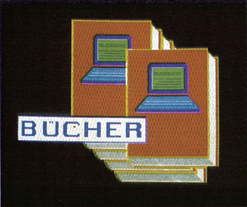

Bücher

Artificial Intelligence — Eine Einführung
Es steht wohl außer Zweifel, daß die Künstliche Intelligenz (KI beziehungsweise AI) eine wichtige Stellung unter den Teilgebieten der Informatik einnimmt. Trotz intensiver Entwicklungsarbeiten an der Artificial Intelligence steckt dieser interessante Forschungszweig praktisch noch in den Kinderschuhen. Für den Fall, daß Sie gerne mehr über die wissenschaftlichen Aspekte der Kl erfahren wollen, sei hier auf die im B. G. Teubner-Verlag, Stuttgart, erschienene Einführung in die Artificial Intelligence verwiesen.
In diesem Leitfaden werden auf über 200 Seiten alle wichtigen Methoden der Künstlichen Intelligenz behandelt. Während die Einleitung auch vom Laien gut verstanden werden kann, — hier geht es unter anderem um die »intelligenten Fähigkeiten« des Computers — dürfte er allerdings bei dem Kapitel, das sich mit der KI und der kognitiven Psychologie befaßt, seine Probleme bekommen. Denn dieser Teil des Buches liest sich ausgesprochen trocken und ist aufgrund der zahlreichen Fachwörter nicht leicht verdaulich. In einem weiteren Kapitel werden differenzierte Suchstrategien der KI und das Erkennen bestimmter Objekte anhand von Beispielen anschaulich erklärt. Auch über die verschiedenen Arten von Wissensrepräsentation wird der Leser aufgeklärt. Fragen über das Wesen der Expertensysteme und das »Knowledge Engineering« bleiben selbstverständlich nicht unbeantwortet. Zusätzlich geht einer der Autoren schließlich noch auf die Methoden des Verstehens natürlicher (geschriebener) Sprache ein. Er zählt die Probleme beider Analyse von Sprache aufund deutet die Ziele und Vorgehensweisen beim Sprachverstehen an. Auch fachbezogene Themen wie die automatische Inferenz werden in dem Werk abgehandelt. Schließlich beschäftigt sich noch ein Kapitel mit dem automatischen Programmieren. Es wird darin geschildert, wie der Computer sich selbst programmiert.
Am Ende des Buches geht Robert Trappl auf die möglichen Auswirkungen der Artificial Intelligence in der nahen Zukunft ein, wobei einige interessante Thesen darüber entwickelt werden.
Alles in allem ein Buch, dases verdient, gelesen zu werden.
(M. Marek/bj)Info: J. Retti u.a., Artificial Intelligence — Eine Einführung, B. G. Teubner, Stuttgart, 214 Seiten, ISBN 3-519-02473-X, 32 Mark
Pascal mit dem C 64
Das erste, das sofort angenehman diesem Buch auffällt, ist die mitgelieferte Programmdiskette, aufder sich ein komplettes Pascal-System, inklusive Full-Screen-Editor und Compiler, befindet. Anders betrachtet könnte man esnatürlich auch als Programmpaket mit einer sehr, sehr ausführlichen Anleitung bezeichnen. Im ersten Kapitel wird der Leser dem Thema »Pascal« durch allgemeine Einleitungen der Art »Warum Pascal und »Was macht ein Compiler% nähergebracht. Danach folgt eine schrittweise Einführung in die Bedienung des Systems anhand von Beispielen. Der zweite und größte Teil des Buches stellt eine vollständige »Einführung in Pascal« dar. Besonders ausführlich werden die komplizierteren Datentypen (Array, Record und File), sowie die verschiedenen Datenstrukturen (dynamische, lineare, Listen, Bäume, etc.) behandelt. Dieses Kapitel wirkt sehr ausgewogen, da wirklich alle Elemente der Sprache vorgestellt werden. Außerdem werdenim Text einige sehr nützliche Unterprogramme und Algorithmen entwickelt (zum Beispiel Quicksort). Abgerundet wird dieser Abschnitt durch die vielen kleinen Aufgabenstellungen am Ende jedes Teilkapitels, die den Leser zum selbständigen Arbeiten und Lernen gekonnt animieren. In Kapitel drei schließlich geht es um Tips und Tricks speziell für den Commodore 64. Hier wird gezeigt, wie man auf. das Betriebssystem und die Floppy-Station zugreift. Der vierte Teil behandelt ausschließlich die Beschreibung des mitgelieferten Pascal-Systems. Dabei wird sowohl auf die Bedienung der einzelnen Programme als auch auf die Besonderheiten des Compilers eingegangen. Dem Gesamteindruck nach eignet sich dieses Buch in erster Linie für Einsteiger in die Programmiersprache Pascal, bietet aber auch dem erfahrenen Pascal-Benutzer sicherlich einige wertvolle Anregungen. Für den Preis von 52 Mark erhält der interessierte Pascal-Anwender sowohl die künftige Arbeitsgrundlage zum Erstellen, Testen und Betreiben von Pascal-Programmen, als auch eine Einführung in diese Sprache mit Anregungen für weitere eigene Programmentwicklungen. »Pascal mit dem C 64« kann allen C 64-Besitzern empfohlen werden, die auf ihrem Heimcomputer die Programmierung der in Wissenschaft und Forschung sehr verbreiteten Sprache »Pascal« erlernen möchten.
(Christoph Bergmann/bj)Info: Florian Matthes, Pascal mit dem C 64, Markt & Technik Verlag AG, 215 Seiten, ISBN 3-89090-222-7, 52 Mark mit Programmdiskette (Pascal-System)
Heimcomputer-Bastelkiste
Für alle Freunde der Meß-, Regel- und Steuertechnik ist nun aus dem Falken-Verlag das Buch »Heimcomputer-Bastelkiste« von Gerhard A. Karl erschienen. Obwohl es nicht speziell für C 64-Besitzer geschrieben wurde, ist es auch für diese eine wahre Fundgrube. In fünf Kapiteln werden sowohl soft-, als auch hardwaremäßige Grundlagen geschaffen, um mit den geläufigsten Heimcomputern selbst komplexe Abläufe zu überwachen. Die Programme für die vorgeschlagenen Anwendungen und deren Realisierung sind in Basic geschrieben, wobei die Listings in ihrem Aufbau jedoch geräteunabhängig beschrieben werden. Kapitel 1 beschreibt allgemein und kurz den Aufbau eines Heimcomputers. Im zweiten Kapitel behandelt der Autor unter der Überschrift »Computer steuern und regeln« die softwareseitigen Voraussetzungen, um die später beschriebenen Schaltungen betreiben zu können. Hier wird sowohl Basic als auch Maschinensprache für 6502/6510- und Z80-Prozessoren vorgestellt, wobei dieses Kapitel natürlich keinen Basic-, beziehungsweise Assembler- und
Maschinensprache-Lehrgang oder entsprechende Literatur ersetzen kann. Im dritten Kapitel werden die nötigen Verbindungen zwischen dem Computer und der »Außenwelt« behandelt. Um : Bauelemente 'an Daten-, Adreß- und Steuerbus anschließen zu können, werden die Bauanleitungen für die Buspufferung und Decodierung besprochen. Die gebräuchlichsten Schnittstellenbausteine für 6502- und Z80-Prozessoren werden ebenso beschrieben, wie auch Tips, einfache Schnittstellen mit Hilfe von TTL-Bauteilen herstellen zu können. In Kapitel vier behandelt der Autor alle wichtigen Bauelemente wie Transistoren, Thyristoren, Triacs, Relais, LEDs etc. Das letzte Kapitel bietet Ihnen viele Schaltungsbeispiele für die Heimcomputer C 64, Sinclair, MSX, Apple II, MC, Atari und Tandy. Da alle Schaltungen auf dem gleichen Prinzip aufbauen, können sie ohne großen Aufwand an alle beschriebenen Computer angeschlossen werden. Lediglich die Steuerprogramme müssen dem Computer-Typ angepaßt werden. Es wird dabei gezeigt, wie Sie Ihren Heimcomputer als Meß-, Telefon- oder Sprach-Computer einsetzen können. Ebenso finden Funkamateure, Modelleisenbahner und Energiesparer einige Bauanleitungen, um ihren Computer zweckmäßig verwenden zu können.
Das Buch ist verständlich geschrieben, läßt sich flüssig lesen und hilft die Hemmschwelle überwinden, zum Lötkolben zu greifen und mit dem. Computer zu experimentieren.
(C.Q. Spitzner/bj)Info: Gerhard A. Karl, Heimcomputer-Bastelkiste, Falken-Verlag, 255 Seiten, ISBN 3-8068-4309-0, Preis: 39 Mark